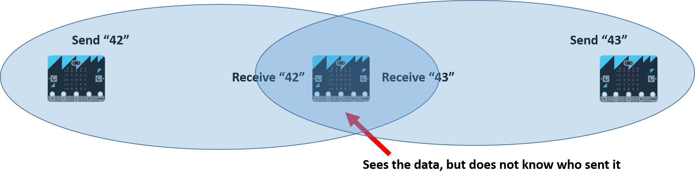

#uBit.radio
##Overview
The central processor unit (CPU) on the micro:bit is a Nordic Semiconductor nRF51822. In addition to being a general purpose computer processor, this chip also contains a built-in 2.4GHz radio module. This radio can be configured in a number of ways, and is primarily designed to run the Bluetooth Low Energy (BLE) protocol. However, it can also be placed into a much simpler mode of operation based that allows simple, direct micro:bit to micro:bit communication.
The MicroBitRadio component is made up of three classes - MicroBitRadio, MicroBitRadioEvent and MicroBitRadioDatagram. Together,
these provide the ability to send general purpose data packets from one micro:bit to another, and to extend a message bus to span multiple micro:bits...
so if you raise an event on one micro:bit, you can receive it on another using the normal listen mechanism!
!!! note
It is not currently possible to run the MicroBitRadio component and Bluetooth Low Energy (BLE) at the same time. If you want to use the MicroBitRadio functionality, you need to disable the BLE stack on your micro:bit by compiling the runtime with #define MICROBIT_BLE_ENABLED 0 in your inc/MicroBitConfig.h file.
Capabilities¶
This component provides a very easy to use, flexible, broadcast radio channel. Anything you send from one micro:bit, can be received by any other micro:bits nearby. It is designed to provide a powerful but simple introduction to the world of wireless communications, and can let you create a whole range of applications from building your own friend detectors to creating remote control cars.
A key principle of this component is privacy, which is built in from the ground up. So, when you send any data, there is nothing inherent in this protocol which can be used to identify you or your micro:bit. All devices look identical. Therefore, if you want to be able to identify yourself, you need to add this to your own data.

| Capability | Brief Description | | ————- |————-| | Frequency | 1MHz narrowband, typically 2.407 GHz. Use configurable in the 2.400 GHz - 2.499 GHz band. | | Channel Rate | 1Mbps. | | Maximum Transfer Unit | Typically 32 bytes, but reconfigurable in code up to 1024 bytes. | | Addressing | All devices share the same address to guarantee user privacy. | | Encryption | None. User level encryption (or BLE) should be considered if secture channels are required. | | Meshing | None. (yet!) | | Error Detection | 16 bit hardware CRC. | | Transmisson Power| Eight user configurable settings from 0 (-30dbm) to 7 (+4dbm). | | Transmisson Range| Approx. 20m at 0dbm. |
Using MicroBitRadio¶
To write your radio enabled applications, you will likely want to use either the MicroBitRadioDatagram class, or the MicroBitRadioEvent class.
Both of these are created for you as part of the standard uBit object, so this is a choice, not a compromise! :-)
MicroBitRadioDatagram¶
This is the most flexible way to use the radio, and lets you easily send and receive up to 32 bytes of data at a time.
This data can be provided as array of bytes, a text string, or PacketBuffer.
You can send a packet at any time using the uBit.radio.datagram.send function.
Any other micro:bits in range will detect the transmitted packet, and make the packet available through the
uBit.radio.datagram.recv function.
Any micro:bits receiving a datagram packet will also raise a MICROBIT_RADIO_EVT_DATAGRAM event to indicate
that some data is ready to be read.
For example, imagine you were creating a simple remote control car with one micro:bit acting as a remote controller, and another connected to some servos on the car.
You might decide that simply sending a 1 means turn left, and a 2 means turn right, so you may write a program like this for the remote control:
#include "MicroBit.h"
MicroBit uBit;
int main()
{
uBit.init();
uBit.radio.enable();
while(1)
{
if (uBit.buttonA.isPressed())
uBit.radio.datagram.send("1");
else if (uBit.buttonB.isPressed())
uBit.radio.datagram.send("2");
uBit.sleep(100);
}
}
...and one like this for the remote control car:
#include "MicroBit.h"
MicroBit uBit;
void onData(MicroBitEvent e)
{
ManagedString s = uBit.radio.datagram.recv();
if (s == "1")
{
uBit.io.P0.setServoValue(0);
uBit.display.print("A");
}
if (s == "2")
{
uBit.io.P0.setServoValue(180);
uBit.display.print("B");
}
}
int main()
{
uBit.init();
uBit.messageBus.listen(MICROBIT_ID_RADIO, MICROBIT_RADIO_EVT_DATAGRAM, onData);
uBit.radio.enable();
while(1)
uBit.sleep(1000);
}
Using PacketBuffers¶
If you prefer to send a raw series of bytes rather than a text string (which is much more common in communication networks), you can use the PacketBuffer type.
This gives total freedom over the data being shared. Simply create a PacketBuffer of the size you need, and you can read or write data using standard C
array syntax.
For example, here is an similar program using a PacketBuffer:
#include "MicroBit.h"
MicroBit uBit;
int main()
{
uBit.init();
uBit.radio.enable();
// Create a packet containing just a single byte.
PacketBuffer b(1);
while(1)
{
b[0] = 0;
if (uBit.buttonA.isPressed())
b[0] = 1;
else if (uBit.buttonB.isPressed())
b[0] = 2;
uBit.radio.datagram.send(b);
uBit.sleep(100);
}
}
...and one like this for the remote control car:
#include "MicroBit.h"
MicroBit uBit;
void onData(MicroBitEvent e)
{
PacketBuffer p = uBit.radio.datagram.recv();
if (p[0] == 1)
{
uBit.io.P0.setServoValue(0);
uBit.display.print("A");
}
if (p[0] == 2)
{
uBit.io.P0.setServoValue(180);
uBit.display.print("B");
}
}
int main()
{
uBit.init();
uBit.messageBus.listen(MICROBIT_ID_RADIO, MICROBIT_RADIO_EVT_DATAGRAM, onData);
uBit.radio.enable();
while(1)
uBit.sleep(1000);
}
MicroBitRadioEvent¶
It is also possible to transparently send and receive events over the MicroBitRadio channel. This can provide very simple and easy to integrate
support for event driven applications. Once configured, an event raised on one micro:bit can be detected on another - in the just the same way as
a local event such as a button click.
To use this functionality, all that is needed is to register the event codes that you would like to be sent over the radio, then write event handlers
for the message bus as with all other events. See the documentation for the MicroBitMessageBus for details of how to write
event handlers.
For example, if you wanted to share an event SOMETHING with another micro:bit whenever ButtonA is pressed, you might write code like this on the sending micro:bit:
#include "MicroBit.h"
MicroBit uBit;
#define MY_APP_ID 4000
#define SOMETHING 1
int main()
{
uBit.init();
uBit.radio.enable();
// Ensure the radio is listening out to forward our events
uBit.radio.event.listen(MY_APP_ID, MICROBIT_EVT_ANY);
// Just for varierty, this time we'll periodically check to see if a button if pressed.
// We can, of course, use an event handler for this too.
while(1)
{
if (uBit.buttonA.isPressed())
MicroBitEvent(MY_APP_ID, SOMETHING);
uBit.sleep(100);
}
}
...and on the micro:bits wanting to receive the event:
#include "MicroBit.h"
MicroBit uBit;
#define MY_APP_ID 4000
#define SOMETHING 1
void onSomething(MicroBitEvent e)
{
uBit.display.scrollAsync("Something!");
}
int main()
{
uBit.init();
uBit.messageBus.listen(MY_APP_ID, SOMETHING, onSomething);
uBit.radio.enable();
while(1)
uBit.sleep(1000);
}
Defining Groups¶
It is easy to imagine situations where you would like to have different groups of micro:bits communicating independently.
For example, consider a classroom where 8 groups of four children are working on different projects - it would not be very useful if packets sent by one group interfered with the other groups!
To address this, the MicroBitRadio allows users to define a group to which their micro:bit belongs.
micro:bits can only ever be a member of one group at a time, and any packets sent will only be received by other micro:bits in the same group.
Groups are simply numbers, and a micro:bit’s group can be set at anytime by the programmer through the setGroup function. If a group is not specified, the default group of 0 will be used.
For example:
#include "MicroBit.h"
MicroBit uBit;
int main()
{
uBit.init();
uBit.radio.setGroup(10);
}
##Message Bus ID
| Constant | Value | | ————- |————-| | MICROBIT_ID_RADIO | 29 | | MICROBIT_ID_RADIO_DATA_READY | 30 |
##Message Bus Events
| Constant | Value | | ————- |————-| | MICROBIT_RADIO_EVT_DATAGRAM | 1 |
#API
[comment]: <> ({“className”:”MicroBitRadio”})
##Constructor
####MicroBitRadio()
#####Description
Constructor.
Initialise the MicroBitRadio .
!!! note This class is demand activated, as a result most resources are only committed if send/recv or event registrations calls are made.
####MicroBitRadio(
Initialise the MicroBitRadio .
#####Parameters
uint16_tid
!!! note This class is demand activated, as a result most resources are only committed if send/recv or event registrations calls are made.
##setTransmitPower
####
#####Parameters
intpower - a value in the range 0..7, where 0 is the lowest power and 7 is the highest.
#####Returns
MICROBIT_OK on success, or MICROBIT_INVALID_PARAMETER if the value is out of range.
##setFrequencyBand
####
#####Parameters
intband - a frequency band in the range 0 - 100. Each step is 1MHz wide, based at 2400MHz.
#####Returns
MICROBIT_OK on success, or MICROBIT_INVALID_PARAMETER if the value is out of range, or MICROBIT_NOT_SUPPORTED if the BLE stack is running.
##getRxBuf
####
#####Returns
a pointer to the current receive buffer.
##queueRxBuf
####
#####Returns
MICROBIT_OK on success, or MICROBIT_NO_RESOURCES if a replacement receiver buffer could not be allocated (either by policy or memory exhaustion).
##setRSSI
####
#####Parameters
uint8_trssi - the new rssi value.
!!! note should only be called from RADIO_IRQHandler...
##getRSSI
####
#####Returns
the most recent RSSI value or MICROBIT_NOT_SUPPORTED if the BLE stack is running.
##enable
####
#####Returns
MICROBIT_OK on success, MICROBIT_NOT_SUPPORTED if the BLE stack is running.
##disable
####
#####Returns
MICROBIT_OK on success, MICROBIT_NOT_SUPPORTED if the BLE stack is running.
##setGroup
####
#####Parameters
uint8_tgroup - The group to join. A micro:bit can only listen to one group ID at any time.
#####Returns
MICROBIT_OK on success, or MICROBIT_NOT_SUPPORTED if the BLE stack is running.
##dataReady
####
#####Returns
The number of packets in the receive buffer.
##recv
####
#####Returns The buffer containing the the packet. If no data is available, NULL is returned.
!!! note Once recv() has been called, it is the callers responsibility to delete the buffer when appropriate.
##send
####
#####Parameters
FrameBuffer \*buffer
#####Returns MICROBIT_OK on success, or MICROBIT_NOT_SUPPORTED if the BLE stack is running.
[comment]: <> ({“end”:”MicroBitRadio”})